- 오랜만에 연구 결과를 국제학회에서 발표했습니다.
- 일정이 바빴다는 핑계를 댈 수도 있지만 생성 AI의 능력과 그간 쌓인 노하우를 믿었습니다.
- 밀도있게 3일 준비해서 발표를 마쳤습니다. 자세하게 말씀드릴 수는 없지만 노하우를 공유합니다.
2024.09.14. - 초록 제출
(1) 결론은 가지고 시작
- 여러 이유가 겹쳐 지난 1년간 연구 결과를 발표하지 못했습니다.
- 오랜만에 학회에 발표할 기회가 생겼으나 초록 제출 기한이 매우 촉박했습니다.
- 큰 결론은 기존 업무를 수행하며 알고 있었기 때문에 초록을 작성하기 위한 최소한의 지식을 정리할 필요가 있었습니다.
(2) 대량의 논문에서 필요한 논문들 선별
- 저희 분야에서 논문에 쓰일 만한 지식은 일반 검색 엔진에서 찾기 어렵습니다.
- 공개된 데이터를 잘 찾아주는
perplexity등의 도구들이 많이 나와 있지만, - 라이선스를 확보하고 논문을 검색해야 하는 scopus 등 데이터베이스를 이용해야 하기 때문에 다른 방법을 찾아야 합니다.
- 다행히 Scopus API를 사용할 수 있는 환경을 구축해 두었습니다.
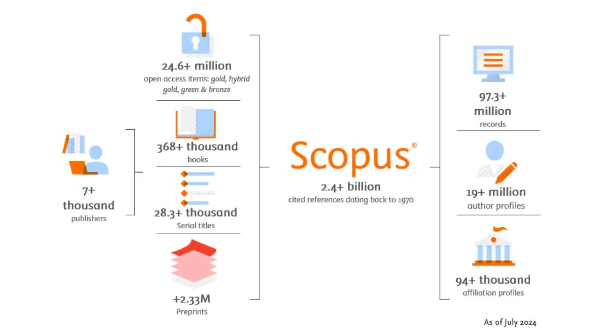
- Scopus API로 초록을 대량으로 확보하고,
- RAG를 사용해 관심사에 가까운 정보들을 수집하여 정리하는 시스템을 보유하고 있습니다.
- 확보한 대량의 데이터로는 경향성을 확인하고 읽어야겠다 싶은 논문은 PDF를 내려받아 읽습니다.
(3) 그림으로 내용 파악
- PDF 파일은 정독하기 전에 그림부터 봅니다.
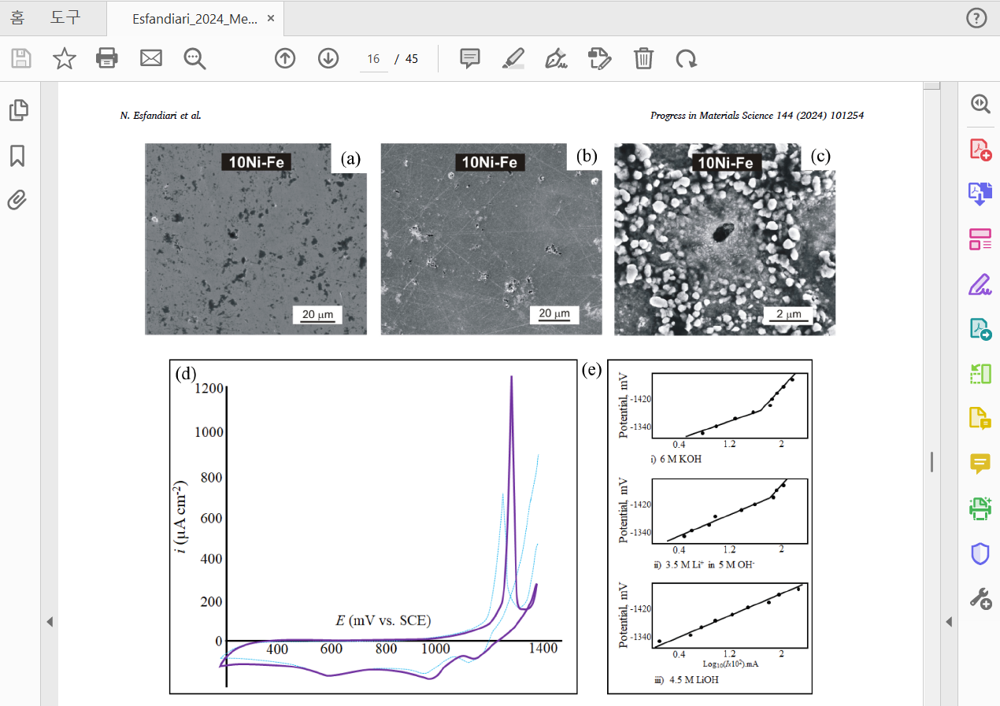
- 생성 AI가 나오기 전부터 갖고 있던 습관이지만 그림부터 보는 데는 몇 가지 이유가 있습니다.
1. 논문을 쓸 때 그림부터 순서대로 정리합니다.
- 어떤 그림들이 들어가야 할 지 설계하고, 이 그림들을 그리면서 논리 전개를 고민합니다.
- 그렇기 때문에 그림만 제대로 보아도 논문의 중요한 내용들을 파악할 수 있습니다.
2. 그림에 많은 정보가 담겨 있을 뿐 아니라 인지가 빠릅니다.
-
현미경 사진이나 중요한 그래프는 그림 속에 중요 정보를 모두 담고 있습니다.
-
대개 그림에 담긴 정보는 글에도 써 있기 마련이지만 같은 정보를 그림으로 보는 것이 수 배 빠릅니다.
-
그림으로 내용을 대강 파악했다면
논문봇을 사용해 전체적인 가치를 판단합니다. -
여기서 가치는 논문이 가지는 절대적인 가치(if any)가 아니라 나에게 도움이 되는지 여부입니다.
-
불필요하다면 과감하게 버립니다. 읽어야 할 논문은 어차피 많습니다.
-
많은 분들이 오해하십니다만, 논문봇은 논문을 읽기 위한 도구가 아닙니다.
-
논문봇은 버릴 논문을 선별할 때 쓰기 위한 도구입니다.
(4) 필요 부분 정독
- 버릴 논문을 버렸다면 읽을 논문을 읽을 차례입니다.
- 모든 글자를 빠짐없이 읽기엔 시간은 적고 할 일은 많습니다.
scispace,notebooklm등의 도구를 사용해 내용을 파악합니다.- 논문 파일을 올려서 그림을 중심으로 파악한 내용들을 질문합니다.
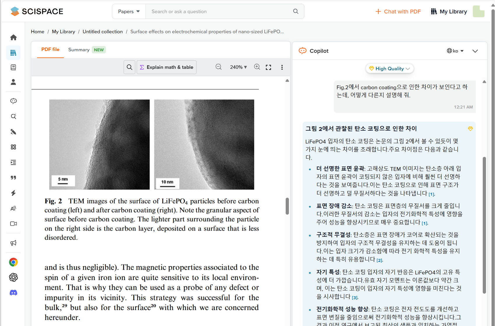
-
scispace나notebooklm은 답변과 함께 레퍼런스 링크를 줍니다. -
이 링크를 클릭하면 입력한 본문 중 답변을 인용한 부분이 하이라이트됩니다.
-
문서를 올리고 질문을 해도 환각이 발생할 확률이 있기 때문에 검증이 매우 중요합니다.
-
이제 논문을 머리로 정리할 필요가 있습니다.
-
눈을 감고 내용들을 머리로 정리해 보아도 좋고,
-
백지와 펜을 들고 그림을 그리며 정리를 해 보는 것도 좋습니다.
-
무엇이건 AI의 도움을 받지 않고 내 머리로 정리하는 것이 중요합니다.
- 함께 이야기를 나눌 동료가 있다면 더 좋습니다.
- 그 과정에서 허점이 발견되기 더 쉽기 때문입니다.
(5) 초록 작성
-
이 정도 되면 초록에 담길 내용이 정리됩니다.
-
파이썬이나 R, 엑셀 중 원하는 도구를 써도 되지만
플랏봇도 써볼 만 합니다. -
ChatGPT나Claude에 내용을 개조식으로 넣고 글을 작성해달라고 합니다. -
중요한 점이 있습니다.
-
AI가 작성한 문장을 의도적으로 모두 바꾸는 것입니다.
-
직접 살펴보며 흡족하지 못한 문장을 바꾸어도 되지만,
DeepL과 같은 도구를 사용해도 좋습니다. -
자동으로 번역된 문장을 보면서 이 중 하나를 선택하는 과정을 통해 스스로 생각하는 기회를 가질 수 있습니다.
-
수정을 반복하며
딴지봇에게 검사를 요청합니다. -
딴지봇에 특별한 대단한 지식이 들어있지는 않지만 논리적 허점을 찾아 반박해주는 기능이 있습니다.
-
딴지봇이 지적한 허점이 진짜 허점인지 스스로 고민해 보고, 타당하다고 생각되면 수정합니다.
2023.11.05-06 (화-수) - 발표 준비 Day 1-2
(6) 그림모음 ppt 준비
- 발표 준비를 할 때 가장 처음 할 일은 빈 파워포인트 파일을 만드는 것입니다.
- 발표에 사용할 그림들을 하나씩 준비하면서 파워포인트 파일에 추가합니다.
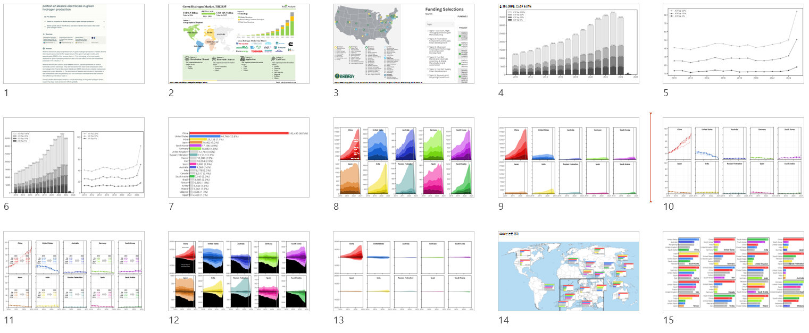
- 일단은 내 머리 속에 있는 논리를 꺼내놓는 데 집중합니다.
- 그러려면 데이터를 분석하고 그림을 그리는 코드도 마구잡이로 짜면 곤란합니다.
플랏봇을 비롯해GPT,Claude에게 너무 의존하면 코드가 중구난방이 됩니다.- 코딩 AI를 쓰지 말라는 말씀이 아닙니다. 기왕이면
cursor.AI같은 전용 도구를 쓰는 것이 여러 모로 더 좋습니다.
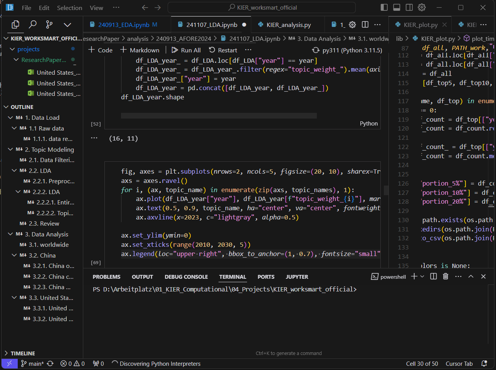
- 중간중간 markdown cell을 넣으면서 목차도 만듭니다. 전에 짰던 코드를 되짚을 때 좋습니다.
- 두 번 쓰인다 싶은 기능은 함수로 만듭니다. 작성되는 코드는 반드시 수정되기 때문에 함수가 좋습니다.
- 함수가 쌓이면 라이브러리로 만듭니다. 메인 코드가 엄청나게 짧아집니다.
- 그래프를 파일로 출력해도 좋지만, 파일명 지옥에 빠질 수 있습니다. 저는 꼭 필요한 것이 아니면 웬만하면 복붙합니다.
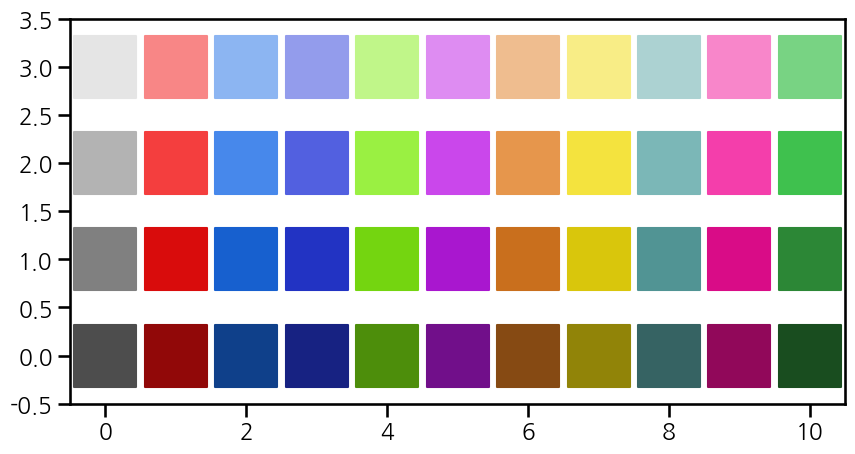
-
데이터 시각화에서 색상(hue)은 단어에 해당됩니다.
-
특정 데이터에 대응되는 특정 색상이 있다면 전달력이 강해지고 보기에도 좋습니다.
-
자주 사용되는 색에 이름을 붙이면 좋습니다. dictionary를 저장하면 꺼내 쓰기 좋습니다.
-
명도(lightness)는 데이터의 크기에 해당됩니다.
-
데이터가 크면 밝은 색, 데이터가 작으면 어두운 색으로 칠하면 직관적으로 데이터를 느낄 수 있습니다.
-
채도(saturation)는 데이터의 중요도에 해당됩니다.
-
중요한 데이터는 채도를 높게 칠하고, 중요하지 않은 데이터는 채도를 낮게 칠합니다.
-
색상으로 표현해야 할 데이터가 많아 구분이 어려울 때 채도를 함께 조절해주면 숨통이 트입니다.
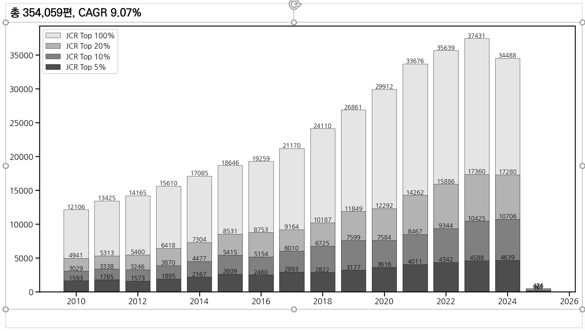
- 이렇게 그려진 그림들은 ppt에 차곡 차곡 붙여 넣습니다.
- 이 때, 기왕이면 최종적으로 발표될 장면들을 생각하면서 정리하면 좋습니다.
- 그림 설명도 발표에 사용하는 폰트와 크기를 이용해 붙여 넣고, 이에 따라 종횡비도 미리 지정합니다.
- 저는 16:9 비율 슬라이드를 사용합니다.
- 그림 크기를 (20, 10)으로 지정하면 상단에 제목이 들어갈 공간이 남고 글자 크기도 적절합니다.
(7) 설명자료 준비
- 머리 속에 마련된 시나리오에 따라 발표자료를 준비하다 보면 확인할만한 정보가 떠오릅니다.
- 근거를 강화시켜 줄 레퍼런스가 필요한 경우도 있고, 추가적인 설명이 필요한 경우도 있습니다.
- 이럴 때 사용하는 것이 설명자료이며
perplexity를 사용하면 빠르게 확보할 수 있습니다.
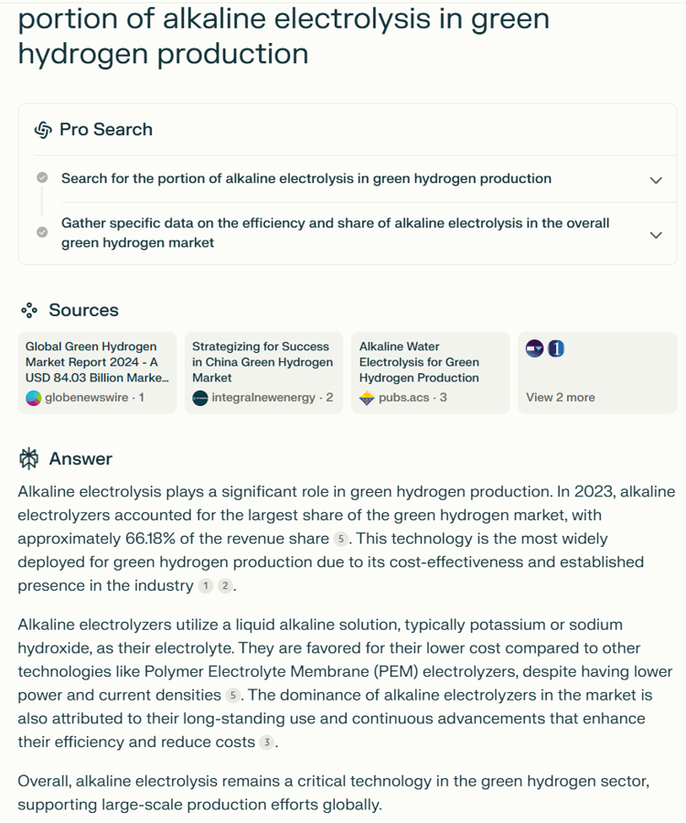
perplexity의 library 항목에 가면 과거에 질의한 내역을 모두 볼 수 있습니다.- 그러나 작업을 하다 보면 비슷한 질의를 많이 하게 되어 이 중 어떤 것인지 혼동됩니다.
- 또한, 눈에 보이지 않으면 내가 그런 정보를 수집했는지조차 잊어버릴 때가 많습니다. 너무 많은 자료를 검색하니까요.
- 이럴 때를 대비하여 쓸만한 답변들을 ppt에 함께 붙여둡니다. 가능한 큰 그림으로요.
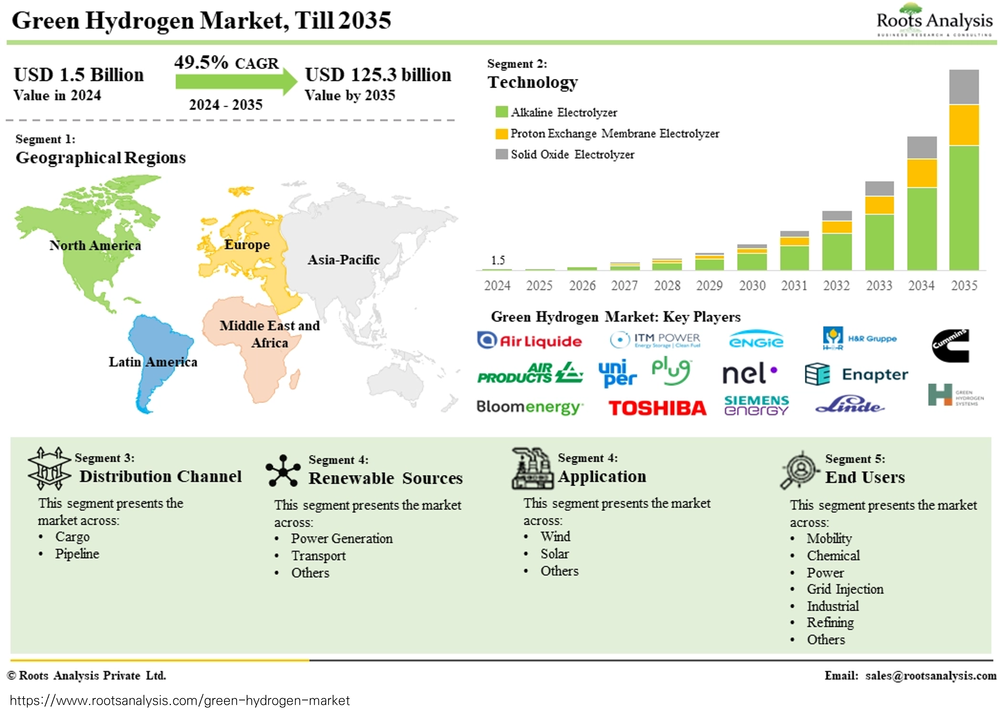
perplexity답변만 볼 것이 아니라 레퍼런스를 클릭하여 직접 확인해보는 것이 좋습니다.- 드물기는 하지만 레퍼런스 자체가 텅 비어 있는 경우가 있기도 하고 - 이럴 때는 답변을 쓰지 않는 것이 좋습니다.
- 레퍼런스를 따라 들어가면
perplexity답변보다 좋은 정보를 얻을 수 있을 때가 많습니다. - 다른 이들의 자료를 인용할 때는 종류가 무엇이건 출처를 명확히 표기합니다.
2023.11.07 (목) - 발표 준비 Day 3 & 발표 당일
(8) 스토리텔링
- 이틀 정도를 꼬박 투자하면서 행정업무도 처리하고, 회의도 들어가고, 전화도 받았습니다.
- 발표 준비가 웬만큼 진행된다고 느껴지지만 스토리가 나온다고 보기는 어려운 상황입니다.
- 할 말을 다 한다고 좋은 발표는 아니라고 생각합니다.
- 슬라이드 쇼를 하는 발표자로서 청중의 이목을 붙잡아 둘 요소가 필요합니다.
- 저는 개그가 정말 중요하다고 생각합니다.

-
딱딱하기 딱 좋은 발표에 등장하는 개그는 여러 효능이 있습니다.
-
청중이 자발적으로 집중하도록 만들고,
-
어려울 수 있는 내용이 쉽게 느껴지도록 착각을 불러 일으킵니다.
-
청중과 연사의 감정이 동조되면서 이해도가 좋아지기 때문입니다.
-
그렇다고 뜬금없이 몸개그를 할 수는 없는 노릇입니다.
-
전체적인 스토리에 잘 녹아들면서 뼈가 있는 개그를 선호합니다.
-
잠시 웃고 정색하며 발표로 넘어가기 좋기 때문입니다.
(9) 데이터 밖에서 인사이트 가져오기
- 데이터 분석을 중심으로 발표를 하다 보면 얻고 싶은 답이 보이지 않을 때가 많습니다.
- 정상입니다. 여러 요인들이 교차하는 가운데 사건이나 문제가 발생하고, 이들의 단편이 데이터이기 때문입니다.
- 데이터를 이용해서 현상을 설명하기엔 좋지만 충분한 인사이트를 주기에는 부족할 때가 많습니다.
- 데이터 밖으로 눈을 돌려 이 사건이나 문제가 발생한 원인을 짚어보는 것이 필요할 때가 있습니다.
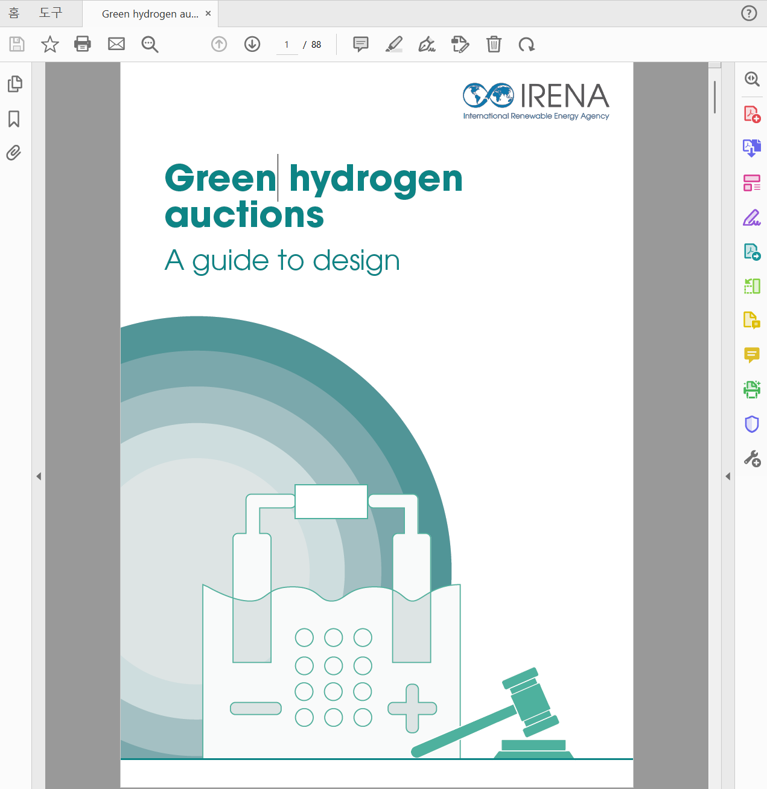
- 이런 추가 정보 소스가 분량이 많을 때가 또 한번의 고비가 됩니다.
- 특히 내가 원하는 답이 있음이 분명한 소스를 찾았을 때, 무시할 수도 없고 읽기는 버거운 상황이 발생합니다.
- 제가 접한 여러 도구 중
NotebookLM만큼 이럴 때 도움이 되는 것이 없는 듯 합니다.
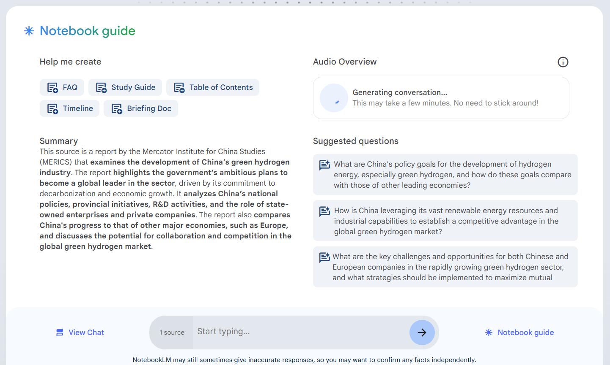
-
NotebookLM은 대량의 문서를 넣고 질의응답을 하기도 좋지만, -
긴 문서를 남녀 두 사람이 진행하는 podcast처럼 만들어주는 기능이 매우 강력합니다.
-
Audio Overview 라고 하며 특히 고속버스나 비행기, 운전 등 장기간 이동을 할 때 유리합니다.
-
귀에 관련 정보를 계속 흘려보내줄 수 있기 때문이며 원본 문서가 길 수록 이 기능이 더욱 강력해집니다.
-
현재는 영어밖에 지원하지 않지만 영어로 발표해야 하는 국제학회라면 오히려 좋습니다.
-
대화 속에 좋은 영어 표현들이 다수 담겨있거든요.
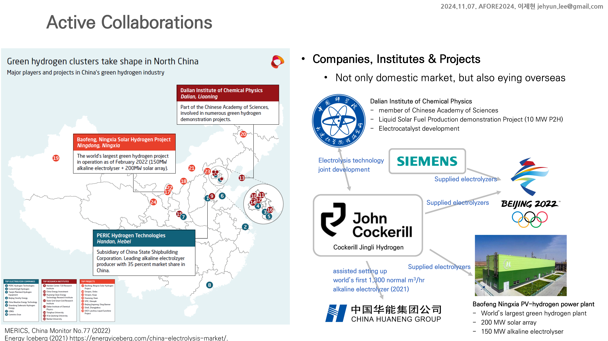
-
다만, 늘 그렇지만 이런 요약본을 곧이곧대로 쓰면 곤란합니다.
-
환각이 끼어들 여지가 너무나 많기 때문에 내용 파악용으로만 사용해야 합니다.
-
다시 메모지를 펴고 이어폰을 꽂은 채 원본 문서에서 관련 내용을 탐색하며 확인합니다.
-
그리고 원본과 오디오에서 정리된 양식과 다르게, 나만의 시각으로 ppt에 정보를 재구성합니다.
-
무대에 올라 발표를 하는 시점에서 이 모든 자료와 내 말에 대한 책임은 스스로 져야 합니다.
-
진정성을 담아 발표할 수 있도록, 그리고 발표하는 만큼은 암기가 아니라 이해를 할 수 있도록 준비해야 합니다.
-
생성AI는 좋은 도구이지만 내가 생성AI를 통제하지 못하면, 생성AI가 나를 통제합니다.